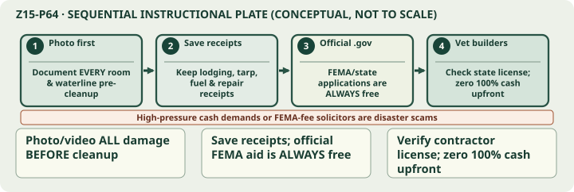

Z15-P64 · Disaster scenarios · New manuscript
Document disaster losses accurately and guard against post-disaster scams
Protect household financial recovery after storms, floods, or fires through clean visual documentation and contractor/scam verification.
When it applies · Post-disaster property damage, insurance claims, and county/FEMA disaster assistance applications.
Equipment · Photos/videos of damage BEFORE cleanup, itemized receipts, insurance policy numbers, and state contractor-license lookup.

Actions
- Photograph and video EVERY damaged room, roof, basement waterline, vehicle, and ruined item clearly BEFORE discarding debris (keeping a small swatch of ruined carpet/flooring if insurance requests it), and save EVERY receipt for emergency lodging, tarps, fuel, food loss, and repairs in one dedicated folder.[D16]
- Contact your homeowner/renter/auto insurer promptly AND verify whether county/state/FEMA disaster assistance declarations open via official `.gov` websites or 211—never pay upfront fees to anyone claiming to "expedite FEMA applications" (official federal/state disaster applications are ALWAYS free!).[D16]
- Guard aggressively against post-storm contractor fraud: verify state contractor licenses, proof of insurance, written itemized estimates, and local references—NEVER sign blank insurance assignment forms or pay 100% cash upfront to unsolicited door-to-door crews right after hailstorms or floods.[D16]
Failure recognition · Throwing out flood-soaked appliances before taking photos, then paying $5,000 cash upfront to an unlicensed out-of-state storm-chaser who disappears.[D16]
Verify · Confirm pre-cleanup damage photos saved, all emergency receipts kept together, official `.gov` assistance checked, and contractor licenses verified.[D16]
Stop or change course · High-pressure cash-upfront demands, refusal to show state license/insurance, or requests for bank passwords/FEMA fees terminate contact immediately and get reported to state authorities.[D16]
Evidence and editorial notes
- D16 · FEMA / Ready.gov · Financial Preparedness and Vital Records (current web edition)
- Section: Vital Documents, Cash Reserves, Insurance, and Post-Disaster Recovery · Conditions: 30-day resilience planning and post-disaster household recovery
Support: Keep waterproof physical and encrypted offline digital copies of IDs, medical lists, prescriptions, insurance policies, deeds, and emergency contacts alongside small-denomination cash so household transactions and assistance claims survive bank/internet outages.
Limitations: Online-only cloud portals are inaccessible during power and telecom outages. · Conflicting evidence: None; critical pillar of prolonged 30-day household resilience.
Editorial note: Grounds documentation, cash liquidity, and recovery staging cards. · Specialist reviewer: Emergency management and household continuity
Primary source · checked 2026-11-24
Source lineage · FEMA Financial Preparedness and Recovery; new manuscript · Classification · New manuscript.